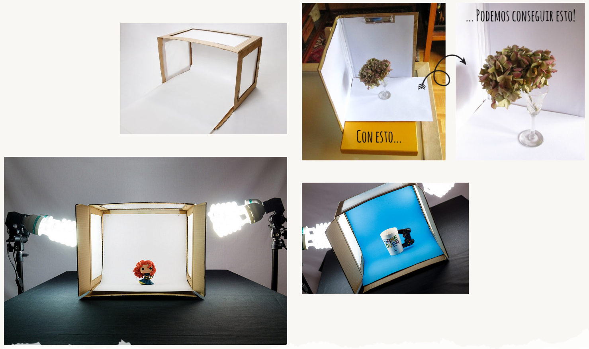

En Green Lens creemos que la creatividad no debe costarle al planeta. Diseñamos, construimos y fotografiamos sobre sets que reducen el desperdicio y demuestran que el diseño sostenible genera una imagen de marca potente, responsable y memorable.
🖼 Ver PortafolioMateriales de reciclaje incluidos, aprendizaje de técnicas de construcción de sets y reutilización creativa.
✎ Inscribirme Al Taller¡Por supuesto! Adaptamos tus requerimientos e ideas creativas utilizando materiales reciclados y técnicas de diseño ecológico.
Sí, cada concepto visual se diseña a la medida de tu proyecto o marca, garantizando exclusividad y sostenibilidad.
La duración varía según el plan contratado: va desde 2 horas en el plan básico hasta más de 6 horas en el plan Premium.
Vivir la experiencia de una sesión de fotos con Green Lens fue totalmente diferente a lo tradicional. Ver cómo transforman botellas y telas recicladas en un set de alta calidad es inspirador. Las fotos quedaron espectaculares y llenas de originalidad.
Mateo RíosCreador de Contenido & Diseñador
Buscábamos una producción fotográfica para nuestra nueva colección que reflejara nuestros valores ecológicos sin perder elegancia. El equipo de Green Lens creó una escenografía increíble solo con cartón y papel recuperado. El resultado visual superó nuestras expectativas y enamoró a nuestros clientes.
Camila MoralesFundadora de Ecowa Clothing
Asistí al taller de creación de escenografías y superó mis expectativas. Aprendí técnicas prácticas para construir fondos creativos con materiales reutilizables. La combinación entre arte, conciencia ambiental y fotografía que transmiten es única.
Valeria GómezAsistente al Taller de Arte Eco-Creativo